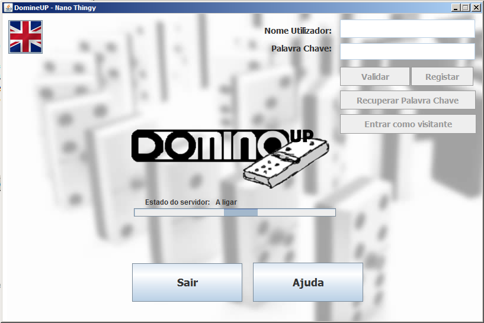
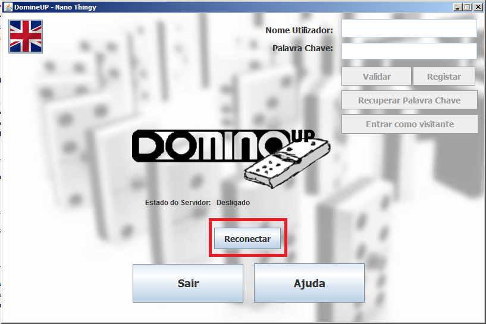

Antes de ser iniciado qualquer tipo de caso de utilização, a aplicação necessita de se ligar ao devido servidor. Tal ligação é feita automaticamente ao iniciar a aplicação, onde, como se pode ver na seguinte imagem, existe uma barra de progresso, referente ao estado de ligação.

Em caso de o cliente não se conseguir ligar ao servidor, surge uma janela de erro, que indica que houve uma falha na ligação, conforme a seguinte a imagem:
Pressionando o botão de "Ok", nessa janela, o utilizador regressa à pagina inicial, onde terá de tentar uma nova ligação, através do botão ’Reconectar’:

Ao ser concluída a ligação ao servidor, é permitido o registo de um novo utilizador, assim como a validação de um utilizador registado e ainda a recuperação da palavra chave de um utilizador registado, conforme a seguinte imagem: